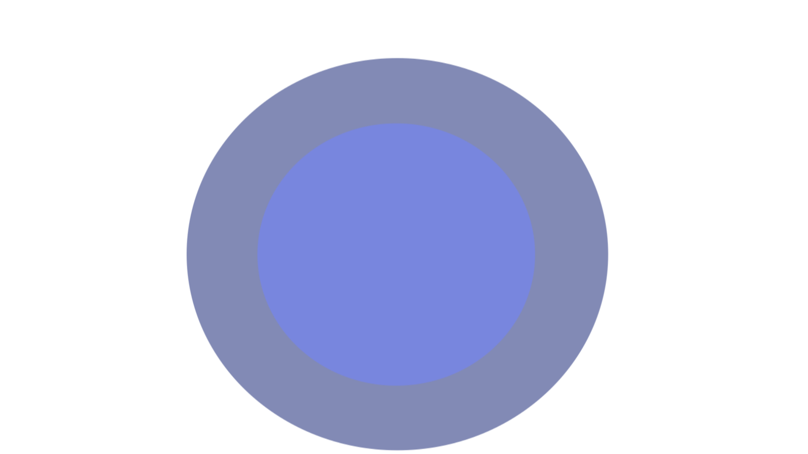

เกิดจากเชื้อไวรัสเรบีส์ (Rabies) ซึ่งพบได้ในสัตว์เลี้ยงลูกด้วยนมหลายชนิด ทั้งสัตว์เลี้ยงและสัตว์ป่า เช่น สุนัข แมว วัว ลิง กระต่าย และค้างคาวที่อยู่ในป่าหรือถ้ำ เป็นต้น โรคพิษสุนัขบ้านั้นไม่มียารักษา ถ้าติดเชื้อมีโอกาสที่จะเสียชีวิตสูงเกือบ 100%
เกิดจากการสัมผัสน้ำลาย หรือ ถูกกัด ข่วน เลียบริเวณบาดแผล ในกรณีของผู้ท่องเที่ยวเดินป่า อาจเกิดจากการถูกค้างคาวกัด โดยมักจะไม่รู้สึกตัวขณะถูกกัด ทำให้ไม่สามารถทำความสะอาดบาดแผลได้ทันท่วงที
อาการของโรคพิษสุนัขบ้ามี 3 ระยะ อาการจะแสดงออกมาหลังจากรับเชื้อเฉลี่ยประมาณ 3 สัปดาห์

มีไข้ ปวดศีรษะ หนาวสั่น
คลื่นไส้ อาเจียน
อ่อนเพลีย
เสียวแปล๊บเหมือนเข็มทิ่ม
หรือคันมากบริเวณที่ถูกกัด
เริ่มมีอาการ สับสน กระสับกระส่าย
กลัวน้ำ
อาการกลัวเสียงดัง
กลืนลำบากโดยเฉพาะของเหลว

หายใจไม่ออก แน่นหน้าอก
กล้ามเนื้อกระตุก
หมดสติและเสียชีวิต